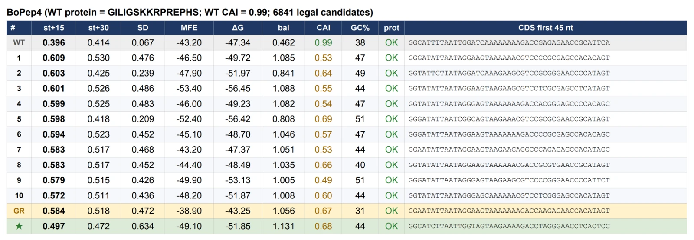
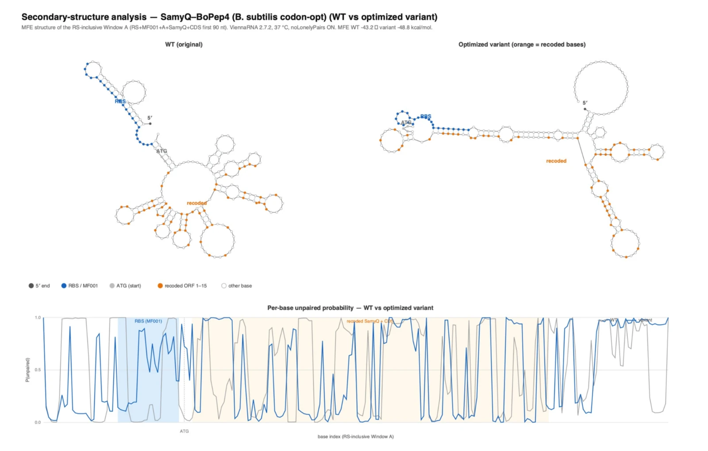

Codon optimisation
The expression cassette is fixed by decisions made elsewhere in the project: a green-light-inducible promoter, the MF001 ribosome binding site with its AAGGAGG core, the SamyQ secretion signal, the payload, any tag, the terminator. Synonymous codon choice is the only free variable left, and the thing it can change is whether a ribosome can get onto the message at all.
The approach is borrowed and the source is worth naming. Castillo-Hair et al. showed for B. subtilis that the dominant determinant of translation initiation in a cassette like this is the secondary structure of the messenger RNA around the ribosome binding site and the start codon [1]. Reduce the local structure there and the start site becomes accessible. That is the assumption the whole section rests on, and it is an assumption: nothing in this project has measured translation initiation.
The window and the metrics
Every calculation runs on one defined stretch of sequence, called Window A, which models the transient messenger state before recombination. It is the recombination site at 28 nt, the MF001 ribosome binding site at 24 nt, a single spacer base, the 93 nt SamyQ signal peptide, and the first 90 nt of the coding sequence. Folding is computed with ViennaRNA 2.7.2 at 37 °C using minimum free energy and the partition function [2].
| Metric | What it measures |
|---|---|
MFE | Minimum free energy of the most stable secondary structure over the window, in kcal/mol. |
start+15, start+30 | Mean unpaired probability over the first 15 or 30 bases from the start codon. How exposed the early coding region is. |
SD core | Mean unpaired probability over the seven-base Shine–Dalgarno core. How exposed the ribosome binding site is. |
CAI | Codon adaptation index against B. subtilis 168 codon usage from the Kazusa database [3]. An elongation measure, not an initiation one. |
Two of those four describe initiation, one describes elongation, and one describes the window as a whole. Keeping them apart matters, because the optimisation goes wrong in a specific way when they are mixed.
The optimisation passes
The work ran in three passes, and each one is a correction to the previous.
Phase 1 held the 93 nt SamyQ signal sequence fixed and recoded only the first fifteen codons of each payload, drawing 8,000 random synonymous candidates per gene. Phase 2 brought elongation in, optimising toward the host codon usage matrix, and it made initiation worse: full-length optimisation pulled the start-region accessibility down. That is the useful negative result in this section, and it is the reason the project stopped treating codon adaptation as the objective. Phase 3 abandoned strict host adaptation and opened SamyQ codons 2 to 31 for editing, which is what finally reduced the structure around the initiation site.

The two documents rank candidates on different objectives, and the difference is not cosmetic.
- Sum: “Codon Opt ViennaRNA.docx”, 23 August, defines the target as
bal = start+15 + SD coreand selects the highest balance score. The bal column in Figure 1 is that sum. - Worse of the two: Peptide Design states that ranking on a sum lets the search buy a large gain in one term with a total loss in the other, gives a worked case where it did exactly that, and reports that ranking moved to the bottleneck,
J = min(start+15, SD core).
Both cannot be the method that produced the ordered sequences. The wiki's account is the later one and gives a reason; the codon document is the primary record and carries the candidate tables. Whoever ran the selection should say which objective the shipped sequences came from, and the losing document should be corrected rather than left in the folder.
Two different sets of numbers are on record for the selected BoPep4 variant.
- Figure 1, the starred row: start+15 of 0.497, Shine–Dalgarno core of 0.634, codon adaptation index of 0.68.
- Peptide Design: a bottleneck moving from 0.067 to 0.528 at a codon adaptation index of 0.78.
Neither number matches the other, and the bottleneck of the starred row is 0.497, not 0.528. This is almost certainly the same disagreement as P8 seen from the other end, because a different objective selects a different row. It is listed separately because whichever way P8 is settled, one of these two number sets has to come off the wiki.
The folding comparison
The candidate tables say which sequence was chosen. The folding diagrams say what changed, and they are the more convincing evidence, because the mechanism is visible in them.

A lower total free energy alongside a more accessible start site is worth pausing on, because it reads backwards at first. It is the reason the objective is a local accessibility and not the free energy of the window: the two can move in opposite directions, and only one of them is about the ribosome.
Secretion efficiency
Translation is half the problem. The protectant has to leave the cell, and in this design it leaves through the general secretory pathway, carried by the SamyQ signal peptide and cut free by signal peptidase I. SignalP 6.0 is the tool for the question: given a sequence, it predicts whether there is a signal peptide, which type it is, and where the cleavage site falls [4].
What SignalP will not predict is how much protein comes out, and that is the quantity the project actually needs. The evidence on the signal peptide itself is inherited: SamyQ comes from a systematic screen of B. subtilis signal peptides, so it is a reasonable choice, and the project holds exactly one sequence-verified construct using it [5].
The one prediction that does bear on a design decision is the cleavage junction. Signal peptidase I prefers small residues immediately after the cut, and the six cassettes do not all present one: four show a histidine there, one an arginine followed by a proline, and one a glycine. That makes the glycine construct the internal control for the whole set, and the reasoning is worked through on Peptide Design.
The outline carries this heading as Sec-Eff?
, with the question mark, and the question mark is honest. No SignalP output is recorded for any construct in this project: no predicted cleavage position, no probability, no comparison between the tagged and untagged twins. The section needs the run for all six cassettes and a table of predicted cleavage site and score for each. The cheapest experimental answer is already in the freezer and unread, because the sequence-verified AmilCP construct uses the same signal peptide and is a chromoprotein, so whether it secretes can be read off the supernatant by eye.
Tag geometry
Every BoPep4 construct this project ordered before August fused six histidines directly onto Asn23 with no linker, and that is fatal for a reason that needs no modelling at all. The peptide's C-terminal asparagine carboxylate is one half of a bidentate salt bridge to an arginine on the receptor, 2.40 and 2.80 Å in the crystal, and it is the most buried residue of the whole peptide [6]. Peptide-bond geometry puts the backbone nitrogen of any residue 24 essentially where that terminal oxygen sits. Putting an amide nitrogen there does not weaken the bond. It deletes it.
The literature has run the experiment already. Three AtPep family members carry natural C-terminal extensions past the conserved asparagine: two fail to bind PEPR1 at all, the third binds and cannot recruit the co-receptor, and truncating the extension restores activity in all three [6]. That is the base rate the tagged cassettes were drawing from.
So the rule for this project is short. A purification tag goes at the N-terminus. The N-terminal residues make no receptor contact and are unresolved in the crystal density, and a flood-fill test on the receptor structure shows a chain leaving the N-terminus reaches bulk solvent within about two residues while one leaving the C-terminus does not, once the co-receptor is in place. The full geometry is on Peptide Design.
The codon document optimises a construct with a tag on the wrong end.
- C-terminal: “Codon Opt ViennaRNA.docx”, Phase 2, which describes
appending a C-terminal 6xHis purification tag
while optimising toward the host codon matrix. - N-terminal: the six cassettes as ordered on 20 August, D-01 to D-06, in which every tagged construct carries the histidines at the N-terminus and nothing is fused after Asn23.
This may be nothing more than stale text in a document written while the tag decision was being reversed, and it may not. Somebody has to open the sequences that were sent and confirm that the tag position in the ordered DNA is the N-terminal one, for all six. If any shipped construct carries a C-terminal tag, the binding half of this design is void for that construct and the wet lab needs to know before it is assayed.
The order as placed
Six cassettes went to synthesis on 20 August, and they are the endpoint of everything in this section. Every mature product is either the natural sequence exactly or the natural sequence with an N-terminal tag. Nothing is fused after Asn23. No spacer was inserted, so each tagged construct has an untagged twin and the tag comparison is single-variable.
| ID | Construct | Length | What it is for |
|---|---|---|---|
| D-01 | BoPep4 9–23, N-terminal tag | 691 bp | The activity lead, and the only lead a western blot can see. |
| D-02 | BoPep4 G17A 1–23, N-terminal tag | 715 bp | Dead control. Pearce measured this substitution at more than four thousandfold down [7]. |
| D-03 | BoPep4 wild type 1–23, N-terminal tag | 715 bp | Full-length positive reference. |
| D-04 | BoPep4 9–23, no tag | 673 bp | The same lead untagged. Its cleavage context is the least favourable in the batch. |
| D-05 | BoPep4 wild type 1–23, no tag | 697 bp | Exactly the natural molecule, and the internal control for the cleavage question. |
| D-06 | BoPep4 S15A 1–23, N-terminal tag | 715 bp | Graded control, the middle rung. Pearce measured it at about a hundredfold down [7]. |
Three of the six are controls, and that is the design decision worth defending. D-03, D-06 and D-02 are wild type, S15A and G17A on one backbone, spanning about one, about a hundred and more than four thousandfold in published effect size. Without the middle rung the set collapses into a switch that can show the peptide works and cannot show the platform ranks variants, and after the scoring failure on Triage, ranking variants is the capability the project most needs to demonstrate.
One design axis was pulled out of this order at the last moment. K18R was on the sheet and came off on the morning of 16 August, after its contacts were measured against the crystal and the gap it existed to close turned out not to be there. The residue-level map of all six cassettes, and the retraction ledger, are on Peptide Design.
The outline describes this step as packaging and send to WetLab/IDT
, and the handover itself is undocumented. Nothing on the wiki records which vendor synthesised the six cassettes, what arrived, when, or in what form. A short paragraph closes it: the vendor, the order date against the arrival date, the format received, and a pointer to the wet lab record where the constructs are picked up. Without it the section ends at a design and not at a delivery.
References
- Castillo-Hair, S. M., Baerman, E. A., Fujita, M., Igoshin, O. A. & Tabor, J. J. Optogenetic control of Bacillus subtilis gene expression. Nature Communications 10, 3099 (2019). doi:10.1038/s41467-019-10906-6
- Lorenz, R. et al. ViennaRNA Package 2.0. Algorithms for Molecular Biology 6, 26 (2011).
- Nakamura, Y., Gojobori, T. & Ikemura, T. Codon usage tabulated from international DNA sequence databases. Nucleic Acids Research 28, 292 (2000). Kazusa codon usage database.
- Teufel, F. et al. SignalP 6.0 predicts all five types of signal peptides using protein language models. Nature Biotechnology 40, 1023–1025 (2022).
- Brockmeier, U. et al. Systematic screening of all signal peptides from Bacillus subtilis. J. Molecular Biology 362, 393–402 (2006).
- Tang, J., Han, Z., Sun, Y., Zhang, H., Gong, X. & Chai, J. Structural basis for recognition of an endogenous peptide by the plant receptor kinase PEPR1. Cell Research 25, 110–120 (2015). PDB 5GR8.
- Pearce, G., Yamaguchi, Y., Munske, G. & Ryan, C. A. Structure–activity studies of AtPep1, a plant peptide signal involved in the innate immune response. Peptides 29, 2083–2089 (2008).